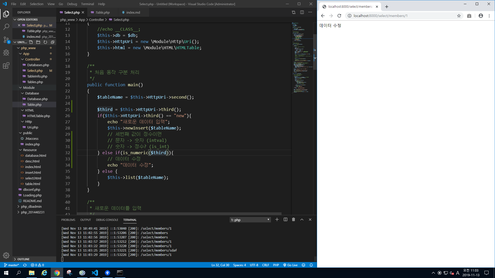

member 테이블 안의 컴럼들 확인하기

cmd 창에서 select * from member;를 하면 cmd 창에 확인 된다.

is_numberic 사용해 경로 만들어 출력하기

주소에 경로 설정 완료
query문을 이용해 회원가입 창 만들기

위에 쿼리문을 이용해서 회원가입에 대한 정보창을 만들고 아래에 for문을 이용해 회원의 정보가 id값과 일치하면 접속 되게 해준다.
연상 배열을 이용한 출력하기

if문을 이용한 delect 하기

테이블의 갯수들 출력해 보기

데이터 조회

Get방식으로 전달하기

PHP 데이터베이스 어드민 페이지 만들기

index.html 파일을 만들어 새로운 페이지 생성!
테이블 목록 버튼을 누루면 각 테이블들의 정보 출력
그리고 좌측 메뉴를 만들기 위한 사전 작업

href 태그를 이용한 좌측 메뉴 만들기

해당 테이블 안으로 들어가면 컬럼들의 정보들을 확인 할 수 있다.

데이터 조회 만들기
간편하게 만들기 위해서